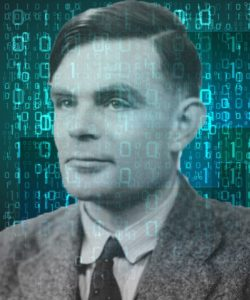

Στα 13 του αποκαλύφθηκε το ταλέντο του Άλαν Τούρινγκ στα μαθηματικά, αν και τα γραπτά του χαρακτηρίζονταν
από τους καθηγητές του «ακατάστατα και πρόχειρα». Το 1928, σε ηλικία 16 ετών,
μελέτησε την εργασία του Άλμπερτ Αϊνστάιν και όχι μόνο την κατάλαβε,
αλλά προεξέτεινε τα ερωτήματα του Αϊνστάιν για τους νόμους του Νεύτωνα για την κίνηση,
σ' ένα κείμενο το οποίο δεν δημοσιεύθηκε. Τα χρόνια εκείνα ανακαλύπτει
την ομοφυλοφιλία του και ερωτεύεται ένα συμμαθητή του, ονόματι Κρίστοφερ Μόρκομ,
ο οποίος όμως λίγους μήνες αργότερα πεθαίνει από βοοειδή φυματίωση,
μετά από κατανάλωση μολυσμένου γάλακτος αγελάδας.
Η απώλεια αυτή κλονίζει την πίστη του.
Τον οδηγεί στον αθεϊσμό και στην πεποίθηση ότι όλα τα φαινόμενα έχουν υλιστική βάση.

Fig.1 - Alan Turing.
Fig.2 - Alan Turing with Friends.
Fig.3 - Alan Turing at School.
Γεννήθηκε στη συνοικία Πάντιγκτον του Λονδίνου στις 23 Ιουνίου 1912.
Ο πατέρας του ήταν υπάλληλος στη βρετανική αποικιοκρατική διοίκηση στην Ινδία κι επέστρεψε με τη σύζυγό του
Έθελ στο Λονδίνο, επειδή ήθελαν να μεγαλώσουν τα παιδιά τους στη Μεγάλη Βρετανία.
Όμως, η δουλειά του πατέρα του απαιτούσε να βρίσκεται για μεγάλα χρονικά διαστήματα στην Ινδία
κι έτσι τα δύο παιδιά του ζεύγους Τούρινγκ μεγάλωσαν με φίλους της οικογένειας στην Αγγλία,
προκειμένου να μην διακινδυνεύσει η υγεία τους στις αποικίες.